ME179: Wheeled Mobile Robotics
Programming and testing the XRP Robot
-
Robot behavior
- UCSBXRP: web app for programming XRP robots, observing movement and sensor readings, and developing robot behavior through experiments
- Motion, sensing, and planning combined in Python: driving, turning, stopping near an obstacle, following a line, and finding a route to a destination
-
Home, IDE, and Monitor
- Home: starting page for programming, robot setup, and course resources
- IDE: writing and running robot programs; Monitor: viewing robot movement, measurements, and recorded runs
- Side by side: program and Monitor together; direct connection between code, motion, and measurements
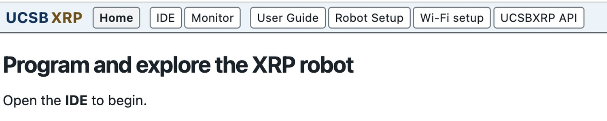
-
Virtual and physical XRP
- Run on: choice of Virtual XRP or Physical XRP for the current program
- Virtual trials for developing and inspecting behavior; physical trials for testing that behavior with motors, wheels, and sensors
IDE: Programming Motion
-
Robot programs and projects
- Project: files for one robot task, including its program and arena; Working folder: local location for Projects, recorded runs, and XRP settings
- Editor: Python code for wheel commands, sensor-based responses, and control calculations
- Project file list: assigned code and README.md, describing the task and work to complete
- Program output: printed observations, task results, and execution errors
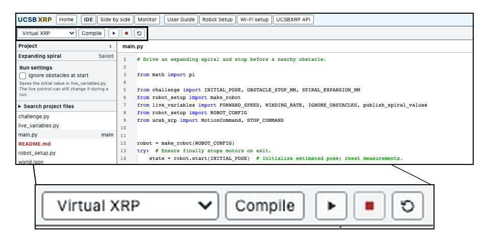
-
Compile, Run, Stop, Reset
- Compile: checking Python files; reported errors identifying code needing correction
- Run: executing the program on the selected XRP; Stop: ending the run
- Reset: returning Virtual XRP to its initial position and heading for another trial
IDE: Projects and Demonstrations
-
Creating a Project
- New project…: starting a named Project from a demonstration, tutorial, or assigned challenge
- Project files in the Working folder; switching Projects to work on a different robot task
- README.md first: intended behavior, relevant files, and experiment instructions
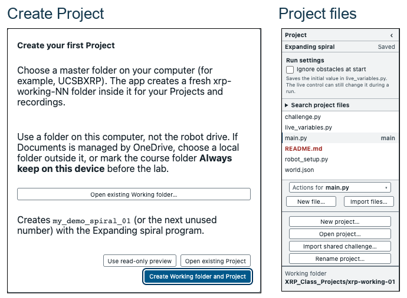
Monitor: World Space and Telemetry
-
World space
- World: spatial view of robot movement within the Project's arena; floor lines, obstacles, and destination markers as context for the task
- Robot path and heading during a run; Fit arena, zoom, and Center XRP for examining movement
- World and obstacle selections for testing a program in different arrangements; visible range indication for relating obstacle readings to the robot's surroundings
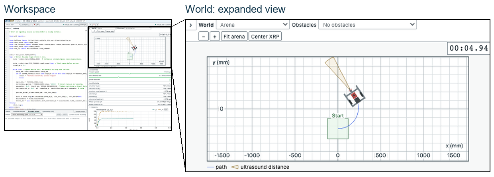
-
Telemetry
- Live telemetry: readings received from the robot during execution; wheel motion and sensor response displayed numerically
- Wheel speeds and accumulated wheel travel for inspecting driving and turning; forward range for obstacle approach; floor reflectance for line detection
- Program-reported measurements alongside robot readings; evidence of the sensing and control calculations used by the program
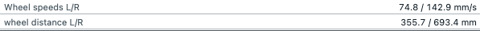
Monitor: Plots and Live Controls
-
Plots
- Measurements over time: acceleration, sustained motion, turns, and stopping visible across a run
- Show target values: requested and measured wheel speeds together; controller response, sustained error, and fluctuations around the request
- Selected time interval for closer inspection; plot markers and Notes for relating changes in readings to observed events
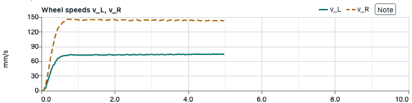
-
Live controls
- Settings supplied by the running program; changes applied while watching motion and measurements
- Path and plots showing the response to an adjustment, such as faster travel or a tighter turn
- One setting changed at a time for a clear connection between the adjustment and observed response
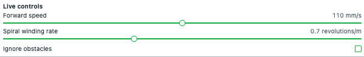
Recording and Reviewing Experiments
-
Recording and reviewing trials
- Automatic recording during each run; path, measurements, and program output available afterward
- Notes: observations attached to moments in the run, such as a turn or obstacle approach
- Open saved run…: reviewing one earlier trial in Monitor
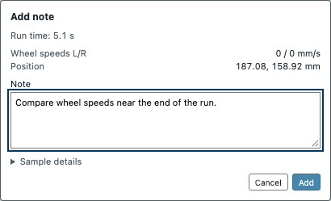
-
Exporting measurements
- Export run data as CSV: measurements and notes for numerical analysis and comparison across trials
- Export run data (ZIP): measurements, program output, and run summary; Include code in ZIP for the program used in that trial
- Plot images and world animation for presenting observed robot behavior
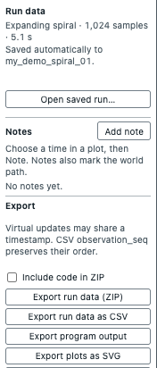
Sensing, Control, and Navigation
-
Robot code
-
Measuring wheel motion:
SensorProcessor, converting encoder readings into wheel travel and speed -
Regulating wheel speed:
WheelSpeedController, adjusting motor effort using requested and measured speeds -
Driving and turning:
DifferentialDrive, coordinating left and right wheel speeds -
Estimating movement:
Odometry, using wheel travel to estimate robot position and heading -
Reaching destinations:
NavigationController, steering toward a destination;GridPlanner, finding a route around mapped obstacles
-
Measuring wheel motion:
-
Testing robot behavior
- Project README.md: assigned sensing or control code and checks
- Test functions: calculations checked against known cases; results in Program output
- Predicted movement before a virtual trial; observed path, sensor readings, and plots afterward
- Revised code followed by another trial; stopping, wheel-speed stability, or route tracking as evidence of improvement
-
Programming help
- User Guide: robot programming, experiments, recordings, and setup
- UCSBXRP API: course classes and functions for sensing, wheel control, navigation, and planning; reference for assigned code
-
Challenges
- Assigned robot tasks combining sensing, control, and navigation in a working solution
- Robot movement and recorded measurements evaluated against task requirements; sensing and control code reused in later tasks
Appendix A: Physical XRP Setup
A.1
Open setup
- From Home, open Robot Setup
A.2
Choose the Working folder
- Choose Open existing Working folder… for current course work, or Set up fresh Working folder for first use
- For fresh work, choose a master folder on the computer when prompted; new xrp-working-NN folder created inside it
- If shown, choose Use [folder name]; Set up or repair an XRP by USB for an existing configured folder
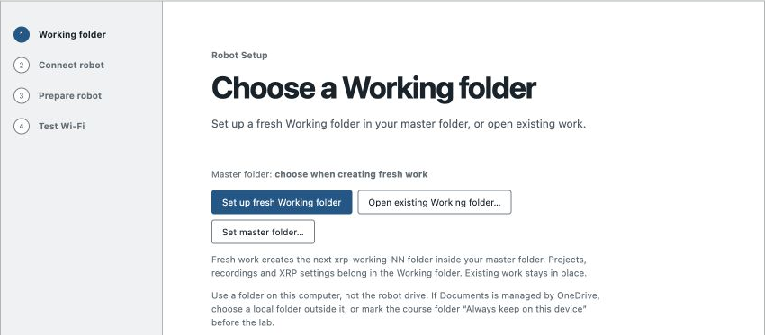
Appendix A: USB and Course Software
A.3
Connect USB-C
- Switch XRP off; connect USB-C data cable; switch XRP on
A.4
Select the XRP
- Choose Connect this XRP for a recognized controller; otherwise Choose connected XRP and select XRP controller in the device picker, possibly listed as Board in FS mode
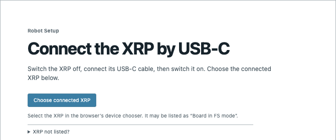
A.5
Complete firmware installation if requested
- Follow Install course firmware when shown; continue with Select restarted XRP [1]
A.6
Prepare the robot
- Under Choose robot Wi-Fi, select Class Wi-Fi; retain Keep [network] when updating an XRP already on that network
- Choose Prepare XRP; keep USB connected and setup page open through software installation and robot restart
[1] Firmware drive, if requested: select the temporary RP2350 drive's top level containing INFO_UF2.TXT; wait for copy completion and drive disappearance, then Select restarted XRP.
Appendix A: Wireless Connection
A.7
Check wireless connection
- At Verify the robot connection, turn on battery power and unplug USB-C
- Connect computer to the network shown on the setup page
- Choose Check wireless connection; choose Allow if the browser requests local-network access
A.8
Finish setup
- Wait for XRP ready and Robot setup is complete
- Choose Open IDE
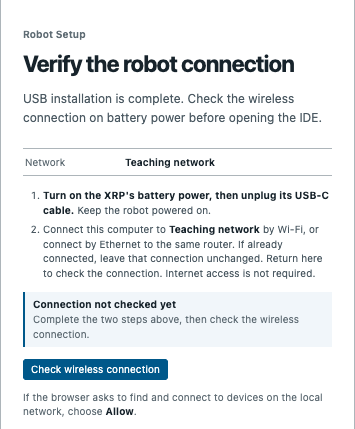
Appendix B: Later Sessions and a Demo
B.1
Reconnect for a lab session
- Power on XRP; connect computer to class Wi-Fi
- Open the same Working folder used during setup; restore folder access if prompted
- Open Wi-Fi setup; choose Test Wi-Fi
- Wait for confirmation that the robot responded and its saved address is current; choose Return to IDE, or Done when Wi-Fi setup is open inside IDE
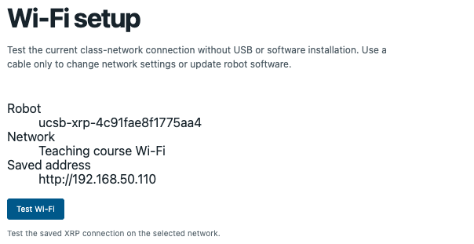
B.2
Open Expanding spiral
- Open existing Expanding spiral Project, or choose New project…, select Expanding spiral, enter a name, and choose Create
B.3
Run the demo
- Select Physical XRP in Run on; choose Compile
- Place XRP at the Project's starting position and heading; choose Run
- Observe robot movement, telemetry, and plots; Stop to end the run
- Review recorded measurements and Program output; add Notes for observations